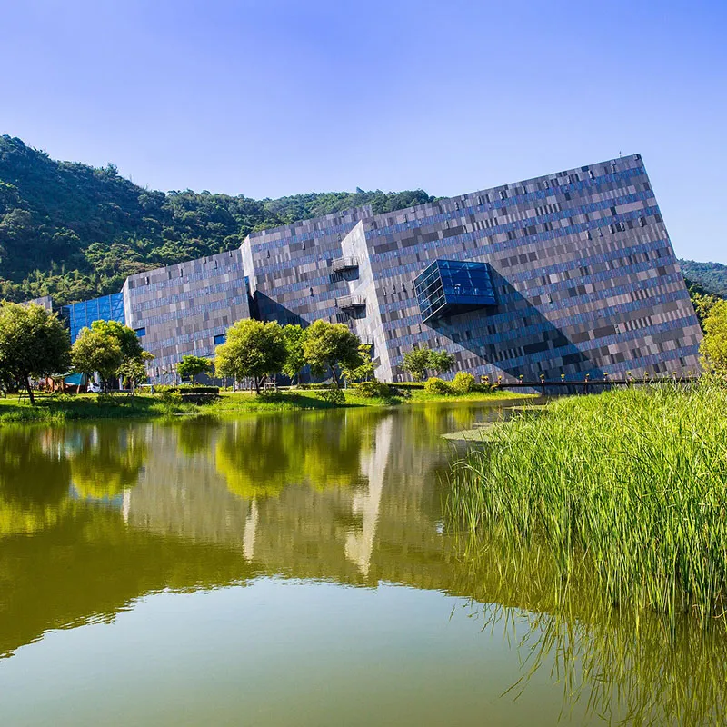
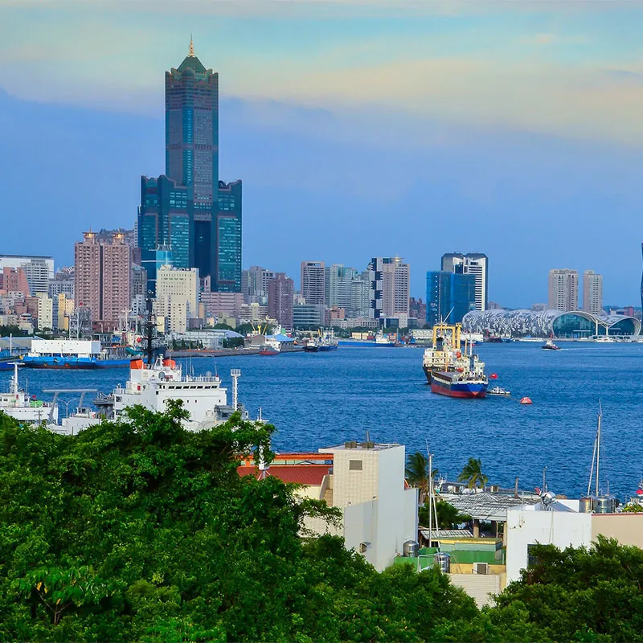
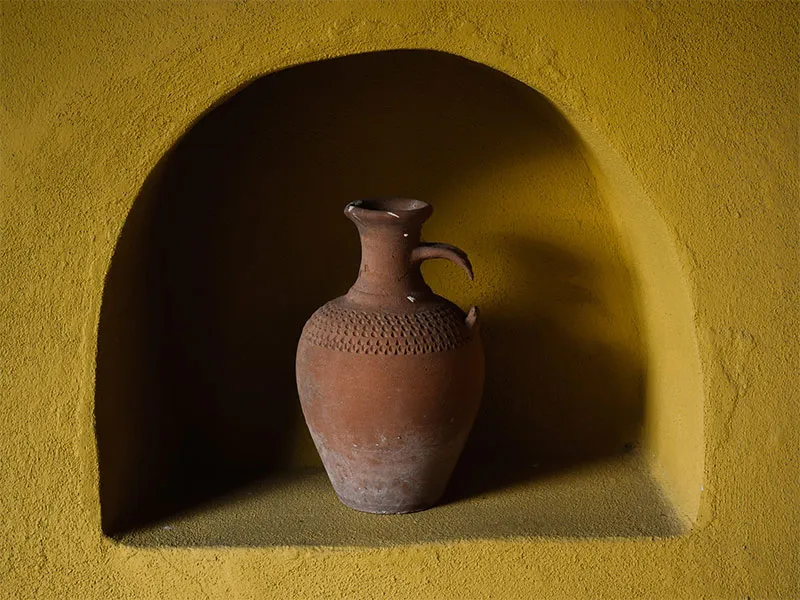
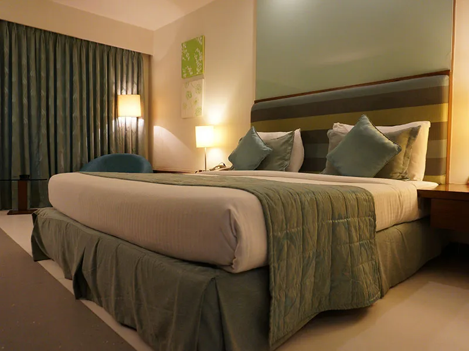

蘭陽博物館
坐落於烏石港遺址公園內，博物館旁擁有一片大面積的溼地生態。
博物館的設計概念，外形就像東北角最常見的單面山，建築物最高點向著東方海面上的龜山島，斜向外牆徑至插入土中，彷如巨石挺立。外牆上大小不同、顏色、深淺不一的方塊，倒映雲影的玻璃帷幕，呈現蘭陽平原四季變換的景觀。
人文與自然景觀相互融合，展現宜蘭的地理環境與人文軌跡。

高雄市港區
看到高雄，你會先想到哪個景點呢？駁二特區的藝文氣息、旗津地區讓人眼睛一亮的冰品及海產，還是漫步蓮池潭邊的悠閒呢？您會期待更深入的旅遊嗎？現在開始，跟著區域觀光改變你的高雄印象！
在大都會區搭乘輕軌探訪軍事古城；漫步東高雄品嚐在地美味；沿著海岸線潮旅行帶領你玩遍漁村和濕地；高雄月世界的奇岩地景也讓人讚嘆！觀光高雄，享受全新體驗!!
高雄愛河domain
跨越整個高雄市中心的愛河，是高雄最具代表性的觀光景點。整齊亮麗的河畔步道、一覽無遺的水岸風光、夜晚光芒絢麗的夜景，兩岸開設的咖啡廳與假日市集，無論在地人與遊客散步慢遊的好去處。再加上一段最經典浪漫的旅遊行程，便是到碼頭搭乘愛之船或貢多拉船，飽覽愛河兩岸風光，徜徉於夜色。

蘭陽博物館
蘭陽博物館旁擁有一片大面積的溼地生態。博物館的設計概念，外形就像東北角最常見的單面山，建築物最高點向著東方海面上的龜山島。外牆上大小不同、顏色、深淺不一的方塊，倒映雲影的玻璃帷幕，呈現蘭陽平原四季變換的景觀。

住宿諮詢
飯店的地理環境極佳且交通便利。提供各項設施包括游泳池、三溫暖、健身中心等，提供氣派奢華的舒適環境，凡塵喧囂瞬間落盡。
多元的休閒藝文活動，值得在此度過悠閒時光。
